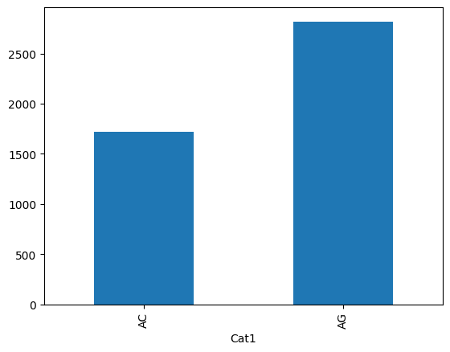
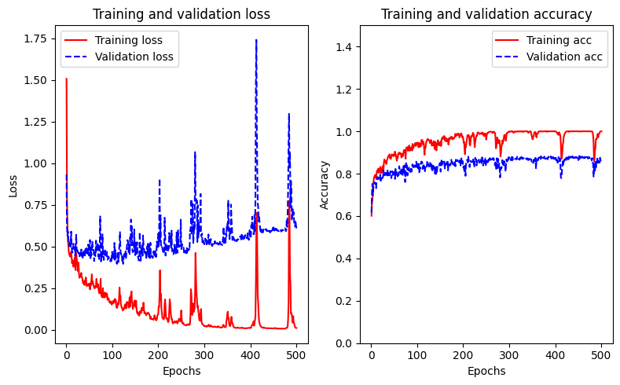
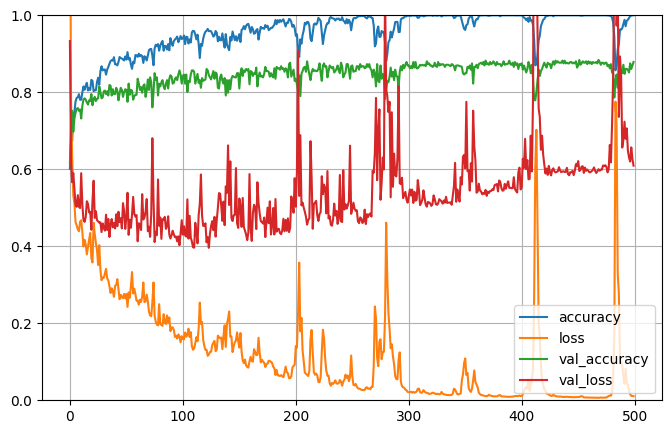
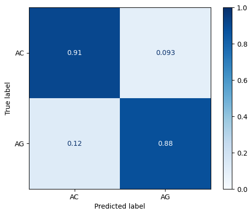

# import packages
import tensorflow as tf
from tensorflow import keras
from keras import regularizers
import tensorflow_docs as tfdocs
import tensorflow_docs.modeling
import pandas as pd
import numpy as np
from collections import Counter
import matplotlib.pyplot as plt
from sklearn.preprocessing import LabelBinarizer
from sklearn.decomposition import PCA
from sklearn.model_selection import train_test_split
from sklearn.preprocessing import StandardScalerArtificial Neural Networks: Primer
1 Artificial Neural Networks: Primer
In [1]:
# Data
df = pd.read_csv("/Users/mauropazmino/Documents/Learning/Deep_learning_tensor/data/MIRS_temperature_vs_age_20241014.dat", sep="\t")
df| Cat1 | Cat2 | Cat3 | Cat4 | Cat5 | Cat6 | Cat7 | Cat8 | Cat9 | Cat10 | ... | 420 | 418 | 416 | 414 | 412 | 410 | 408 | 406 | 404 | 402 | |
|---|---|---|---|---|---|---|---|---|---|---|---|---|---|---|---|---|---|---|---|---|---|
| 0 | AC | S | 0 | YY | SU | T1 | C1 | R1 | 190823 | 111223 | ... | 0.2321 | 0.2309 | 0.2283 | 0.2274 | 0.2275 | 0.2286 | 0.2305 | 0.2316 | 0.2323 | 0.2336 |
| 1 | AC | S | 0 | YY | SU | T1 | C1 | R1 | 190823 | 111223 | ... | 0.2223 | 0.2198 | 0.2187 | 0.2192 | 0.2195 | 0.2192 | 0.2194 | 0.2211 | 0.2225 | 0.2222 |
| 2 | AC | S | 0 | YY | SU | T1 | C1 | R1 | 190823 | 111223 | ... | 0.2040 | 0.2028 | 0.2019 | 0.2022 | 0.2037 | 0.2048 | 0.2054 | 0.2056 | 0.2047 | 0.2036 |
| 3 | AC | S | 0 | YY | SU | T1 | C1 | R1 | 190823 | 111223 | ... | 0.2409 | 0.2389 | 0.2364 | 0.2353 | 0.2360 | 0.2368 | 0.2372 | 0.2380 | 0.2390 | 0.2398 |
| 4 | AC | S | 0 | YY | SU | T1 | C1 | R1 | 190823 | 111223 | ... | 0.2150 | 0.2155 | 0.2152 | 0.2150 | 0.2154 | 0.2154 | 0.2156 | 0.2165 | 0.2181 | 0.2191 |
| ... | ... | ... | ... | ... | ... | ... | ... | ... | ... | ... | ... | ... | ... | ... | ... | ... | ... | ... | ... | ... | ... |
| 4539 | AG | S | 31 | YY | SU | T1 | K2 | R4 | 190923 | 30124 | ... | 0.1638 | 0.1634 | 0.1618 | 0.1608 | 0.1606 | 0.1607 | 0.1617 | 0.1625 | 0.1623 | 0.1616 |
| 4540 | AG | S | 31 | YY | SU | T1 | K2 | R4 | 190923 | 30124 | ... | 0.2457 | 0.2438 | 0.2424 | 0.2420 | 0.2425 | 0.2440 | 0.2457 | 0.2465 | 0.2461 | 0.2443 |
| 4541 | AG | S | 31 | YY | SU | T1 | K2 | R4 | 190923 | 30124 | ... | 0.2676 | 0.2667 | 0.2678 | 0.2682 | 0.2674 | 0.2683 | 0.2712 | 0.2717 | 0.2695 | 0.2685 |
| 4542 | AG | S | 31 | YY | SU | T1 | K2 | R4 | 190923 | 30124 | ... | 0.2725 | 0.2718 | 0.2681 | 0.2659 | 0.2661 | 0.2681 | 0.2708 | 0.2727 | 0.2736 | 0.2741 |
| 4543 | AG | S | 31 | YY | SU | T1 | K2 | R4 | 190923 | 30124 | ... | 0.2230 | 0.2238 | 0.2225 | 0.2199 | 0.2185 | 0.2193 | 0.2213 | 0.2231 | 0.2230 | 0.2223 |
4544 rows × 1812 columns
df.groupby(['Cat1'])['Cat2'].count().plot.bar()<Axes: xlabel='Cat1'>
In [4]:
# Extract features and labels
X = np.asarray(df.iloc[:, 15:-1])
y = np.asarray(df.iloc[:,0])from imblearn.under_sampling import RandomUnderSampler
rus = RandomUnderSampler(random_state=0)
X_resampled, y_resampled = rus.fit_resample(X, y)
print(sorted(Counter(y_resampled).items()))[('AC', 1724), ('AG', 1724)]In [6]:
# Change the labels into 0 or 1
lb = LabelBinarizer()
y_binary = lb.fit_transform(y_resampled)In [7]:
# Split into train and test
X_train, X_test, y_train, y_test = train_test_split(X_resampled, y_binary, stratify=y_binary, shuffle=True, test_size=0.2)In [8]:
# Scaling train and test
scaler = StandardScaler()
X_train = scaler.fit_transform(X_train)
X_test = scaler.transform(X_test)In [9]:
# Split it further train set into train and validation
X_train_2, X_val, y_train_2, y_val = train_test_split(X_train, y_train, stratify=y_train, shuffle=True, test_size=0.2)In [10]:
# functions to eliminate part of the messages when training ANN
def get_callbacks(name):
return [
tfdocs.modeling.EpochDots()
]In [11]:
# define the keras model
input_shape = [1796,]
model = keras.Sequential()
model.add(keras.layers.Input(shape=input_shape))
model.add(keras.layers.Dense(500, activation='relu'))
model.add(keras.layers.Dense(1, activation='sigmoid'))In [12]:
# compile the keras model
model.compile(loss='binary_crossentropy', optimizer='adam', metrics=['accuracy'])model.summary()Model: "sequential"
┏━━━━━━━━━━━━━━━━━━━━━━━━━━━━━━━━━┳━━━━━━━━━━━━━━━━━━━━━━━━┳━━━━━━━━━━━━━━━┓ ┃ Layer (type) ┃ Output Shape ┃ Param # ┃ ┡━━━━━━━━━━━━━━━━━━━━━━━━━━━━━━━━━╇━━━━━━━━━━━━━━━━━━━━━━━━╇━━━━━━━━━━━━━━━┩ │ dense (Dense) │ (None, 500) │ 898,500 │ ├─────────────────────────────────┼────────────────────────┼───────────────┤ │ dense_1 (Dense) │ (None, 1) │ 501 │ └─────────────────────────────────┴────────────────────────┴───────────────┘
Total params: 899,001 (3.43 MB)
Trainable params: 899,001 (3.43 MB)
Non-trainable params: 0 (0.00 B)
history = model.fit(x=X_train_2, y=y_train_2, epochs=500, batch_size=250, validation_data=[X_val, y_val],verbose=0,callbacks=get_callbacks('model_baseline'))
Epoch: 0, accuracy:0.6011, loss:1.5072, val_accuracy:0.6159, val_loss:0.9330,
....................................................................................................
Epoch: 100, accuracy:0.9402, loss:0.1599, val_accuracy:0.8424, val_loss:0.4303,
....................................................................................................
Epoch: 200, accuracy:0.9465, loss:0.1408, val_accuracy:0.8351, val_loss:0.5025,
....................................................................................................
Epoch: 300, accuracy:0.9986, loss:0.0207, val_accuracy:0.8696, val_loss:0.5299,
....................................................................................................
Epoch: 400, accuracy:0.9995, loss:0.0109, val_accuracy:0.8750, val_loss:0.5526,
....................................................................................................# Check training and validation curves
fig, (ax, ax2) = plt.subplots(1, 2, figsize=(8,5), tight_layout=True)
loss = history.history['loss']
val_loss = history.history['val_loss']
epochs = range(1, len(loss) + 1)
ax.plot(epochs, loss, 'r-', label='Training loss')
ax.plot(epochs, val_loss, 'b--', label='Validation loss')
ax.set_title('Training and validation loss')
ax.set_xlabel('Epochs')
ax.set_ylabel('Loss')
acc = history.history['accuracy']
val_acc = history.history['val_accuracy']
ax2.plot(epochs, acc, 'r-', label='Training acc')
ax2.plot(epochs, val_acc, 'b--', label='Validation acc')
ax2.set_title('Training and validation accuracy')
ax2.set_xlabel('Epochs')
ax2.set_ylabel('Accuracy')
ax.legend()
ax2.legend()
ax2.set_ylim(0,1.5)(0.0, 1.5)
In [16]:
# Another way of plotting learning curves
pd.DataFrame(history.history).plot(figsize=(8, 5))
plt.grid(True)
plt.gca().set_ylim(0, 1) # set the vertical range to [0-1]
plt.show()
# model evaluation
model.evaluate(X_test, y_test)22/22 ━━━━━━━━━━━━━━━━━━━━ 0s 1ms/step - accuracy: 0.8840 - loss: 0.4466[0.4332384169101715, 0.8927536010742188]# Make predictions
y_proba = model.predict(X_test)22/22 ━━━━━━━━━━━━━━━━━━━━ 0s 2ms/step # Predictions will be a probability in the range between 0 and 1. So, we round them to have binary predictions
y_predicted = y_proba.round(0).astype(int)
y_predicted[0:5]array([[1],
[1],
[1],
[1],
[0]])# Confusion matrix
from sklearn.metrics import ConfusionMatrixDisplay
ConfusionMatrixDisplay.from_predictions(y_pred=lb.inverse_transform(y_predicted), y_true=lb.inverse_transform(y_test), normalize='true', cmap='Blues',im_kw={'vmin':0, 'vmax':1})<sklearn.metrics._plot.confusion_matrix.ConfusionMatrixDisplay at 0x157215fa0>
# save your model
model.save("./models/my_first_keras_model.keras")# load your model
model_new = keras.models.load_model("./models/my_first_keras_model.keras")/Users/mauropazmino/Documents/Learning/Deep_learning_tensor/.venv/lib/python3.12/site-packages/keras/src/saving/saving_lib.py:719: UserWarning: Skipping variable loading for optimizer 'rmsprop', because it has 6 variables whereas the saved optimizer has 10 variables.
saveable.load_own_variables(weights_store.get(inner_path))In [36]:
model_new.summary()Model: "sequential"
┏━━━━━━━━━━━━━━━━━━━━━━━━━━━━━━━━━┳━━━━━━━━━━━━━━━━━━━━━━━━┳━━━━━━━━━━━━━━━┓ ┃ Layer (type) ┃ Output Shape ┃ Param # ┃ ┡━━━━━━━━━━━━━━━━━━━━━━━━━━━━━━━━━╇━━━━━━━━━━━━━━━━━━━━━━━━╇━━━━━━━━━━━━━━━┩ │ dense (Dense) │ (None, 500) │ 898,500 │ ├─────────────────────────────────┼────────────────────────┼───────────────┤ │ dense_1 (Dense) │ (None, 1) │ 501 │ └─────────────────────────────────┴────────────────────────┴───────────────┘
Total params: 1,798,004 (6.86 MB)
Trainable params: 899,001 (3.43 MB)
Non-trainable params: 0 (0.00 B)
Optimizer params: 899,003 (3.43 MB)
2 Easy neural netwrok arquitechture
The simplest way to prevent overfitting is to start with a small model: A model with a small number of learnable parameters (which is determined by the number of layers and the number of units per layer). In deep learning, the number of learnable parameters in a model is often referred to as the model’s “capacity”.
Intuitively, a model with more parameters will have more “memorization capacity” and therefore will be able to easily learn a perfect dictionary-like mapping between training samples and their targets, a mapping without any generalization power, but this would be useless when making predictions on previously unseen data.
Always keep this in mind: deep learning models tend to be good at fitting to the training data, but the real challenge is generalization, not fitting.
On the other hand, if the network has limited memorization resources, it will not be able to learn the mapping as easily. To minimize its loss, it will have to learn compressed representations that have more predictive power. At the same time, if you make your model too small, it will have difficulty fitting to the training data. There is a balance between “too much capacity” and “not enough capacity”.
Unfortunately, there is no magical formula to determine the right size or architecture of your model (in terms of the number of layers, or the right size for each layer). You will have to experiment using a series of different architectures.
To find an appropriate model size, it’s best to start with relatively few layers and parameters, then begin increasing the size of the layers or adding new layers until you see diminishing returns on the validation loss.
Start with a simple model using only densely-connected layers (tf.keras.layers.Dense) as a baseline, then create larger models, and compare them.